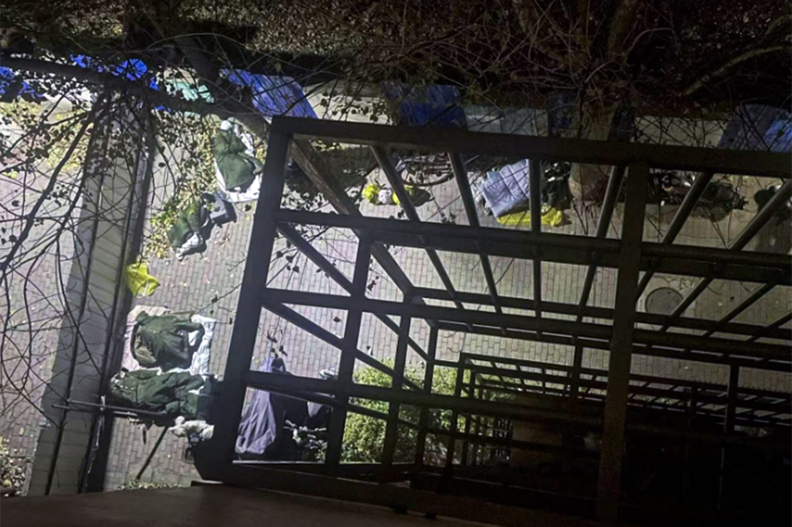

一個北京社區的反封控記錄：「我們是自由的，快走出來吧」
Table of Contents
居民們突然醒悟過來：我們現在這樣，不正是另一個新疆烏魯木齊吉祥苑小區嗎？
Figure 1: 2022年11月21日，北京，穿著防護裝備的工作人員在一個被封鎖的社區內。圖：Bloomberg via Getty Images
特約撰稿人 淮鹽 發自北京
刊登於 2022-12-01
11月28日下午，雅慧外出購物回來。進社區大門時，穿著白色防護服的門衛保安破天荒跟她打了個招呼：「美女，出去買東西啦？」
戴著口罩的雅慧愣了一下。
隨即她明白過來，應該是前天她站出來抗議非法封鎖時，保安記住了她。這是疫情三年以來，保安首次跟她和顏悅色地打招呼。
「疫情三年，門口的保安哪裡正眼看過我們業主？除了進門叫你掃碼，哪裡搭理過你？」雅慧感慨。她是北京市昌平區某小區的老業主。
11月26日起，中國多個城市爆發民眾悼念新疆火災死者及抗議活動，同一時間，北京市朝陽區、昌平區、海淀區等三十個多個社區，自發與社區居委會、警察等部門依法和平地據理力爭，獲得解封。26日，雅慧所在的社區也部分獲得了解封。
這場抗議的結果是，居民們一夜之間知道了：居委會和物業公司沒有執法權；抗議是有用的；居委會要加強監視的打算是沒用的，因為居民們覺醒了。
「我們要求不但能出去，還得能回來」
11月26日上午10點，北京氣溫驟降。天淨得像藍寶石，沒有一絲雲。
業主們陸陸續續出門，集合在西南一門，這是他們不明不白被封控的第八天。
雅慧下來了。還在上大學的佩佩和舍友下來了。醫療公司職員唐婷夫婦來了。企業家孫猛到了。人越來越多。
雖然同住在一個社區，他們並不認識彼此。這種狀態也正常，網絡時代，樓上樓下的鄰居多年互不相識，何況常有人搬家，出入流動大。
讓他們聚集在一起的是微信群裏的一個倡議。
11月25晚大約11點，世界盃A組第二輪的賽事剛結束，東道主卡塔爾1:3輸給了塞內加爾。但人們的心思不在足球賽事上，大家最關心何時解封。
一個居民倡議道：「明天有一起去居委會的嗎？我們要求不但能出去，還得能回來。」
這句話像一個起子，彈開了封裝質疑和怒火的罐頭，道出了很多人憋在心中但不敢冒頭先說的話。居民們紛紛表示要討個說法。微信群內接龍的人越來越多，並迅速傳到了其他業主微信群。
Figure 2: 2022年11月20日，北京，一個社區的居民排隊等候核酸檢測。
上午11點，約百名居民聚集在門口。互不相識的人們開始攀談。
按照11月初國務院聯防聯控機制綜合組發布的《關於進一步優化新冠肺炎疫情防控措施 科學精準做好防控工作的通知》（以下簡稱「20條」），中風險地區判定被取消，高風險區也縮小了範圍，即使封控，一般以單元、樓棟為單位劃定，低風險區域不得「一刀切」、層層加碼。
「20條」成為人們口中的高頻詞彙：「居委會怎麼能憑藉一個僅蓋有它公章的A4紙說明，就把一個低風險小區給封了？」「這絕對違反20條。」「這是 非法封控。」「我們既然一直是低風險區域，就不存在封控一說。既然不存在封控，那我們就是自由的，進出自由。」……
談論的聲浪越來越大。人們達成了一個共識：既然不存在封控，那進出就應該是自由的。
不知是誰喊了句「我們是自由的，快走出來吧。」十幾個人越過社區大門口的電動起落杆，出來了。後面的人站著，有些猶豫。
雅慧說了句：「年輕人，都出來吧！你們都是自由的啊！」猶豫著的人們陸續越過了起落杆。
那一刻，跟著雅慧出來的人們紛紛道：「是啊，這本就是我的權利，我為什麼要害怕呢？」
隨後，當地派出所所長帶著幾個警察過來了。居民們認為，是居委會報了警。
派出所所長奮力勸說人們不要在此聚集，疫情風險大，一邊勸說，一邊把居民往回攔。所長說，這樣做是為大家著想，怕風險擴大。一位男士高聲道：「如果我們是高風險，拿出上級政府研判的紅頭文件，我們二話不說同意封控；但我們是低風險，請問封控我們的文件在哪？」
「居委會這種做法違反了國務院的20條，」男士繼續道，「鎮政府、區政府也得遵守20條吧？違反20條把小區封了，你就說這樣做合法不合法？」
所長情急之下脫口而出「20條不一定解決了疫情（問題）」，被人們逮到話柄：「您意思是國務院那20條是錯的，不好使是嗎？」所長立馬否認，和人們陷入爭論中。
佩佩不解。她覺得派出所所長來這裡，解決不了任何問題。封小區是居委會根據「上級命令」所為，解決問題需要居委會、鎮政府以及區政府出來面對。居民們聚集在此，亦是想和居委會以及給他們頒布命令的上級理性對話，解決問題。
所長對居民們說：「居委會主任生病了。」
佩佩室友說「那拿輪椅推也得把她推來。她生病了，其他人呢？總得有人接替她工作吧？」有人勸說「要理性」，佩佩回敬道「她封你的時候、侵權的時候怎麼不理性呢？」
人們判定，「生病」是推託的話術。
所長撫著佩佩的胳膊說：「好啦，你走吧。」佩佩：「不好不好，我不走。」所長：「哎呀，你就幫幫忙吧，互相理解一下。」佩佩：「你怎麼不理解理解我呢？你理解理解我吧。」
一個警察悄悄指著一個中年男子對佩佩說：「這個人是鎮裡的。」
聽聞鎮政府來人了，人們立刻朝他涌去。中年男子面露驚懼，開始後退。「一個共產黨的幹部，還負責這個片區，老百姓想過來對話，退什麼呢？」佩佩說。
Figure 3: 穿了一雙一萬多元綠色LV運動鞋的「幹部」。
佩佩發現這位「幹部」穿了一雙1萬多元的綠色LV運動鞋，喊了一句「他的鞋子是LV的」，中年男子扭頭就跑。
佩佩道：「如果收入來源是正當合法的，別人喊一句穿了LV的鞋子，他跑什麼呢？這麼害怕群眾，說明有問題。」她後來查到，這人是北七家鎮城鄉建設服務中心負責人，分館垃圾處理和安保工作，手下有1900個保安。
佩佩一行人候至中午，居委會的人仍未露面。天氣太冷了，人們決定先回家吃午飯，下午再來。
事後，佩佩對端傳媒表示：「我們聚集在這裡，就想問居委會一個問題：有沒有執行封控的上級文件，有就是有，沒有就是沒有。為什麼要迴避這樣一個簡單的問題呢？」
「封小區到底合法不合法，這是一個基本的問題。他（派出所所長）作為一個執法者，連合法不合法這樣的問題都不敢回答，不能堅定地做法律的執行者和捍 衛者，那警察來幹嘛的？」佩佩覺得憤怒，「我們要的是跟居委會對話，你（警察）要是來維持秩序的，就別說話，在旁邊維持秩序就好。」
「打個不好聽的比方，這裡是糞坑，你既然不鏟糞，幹嘛要沾上一身？」佩佩說。在小區被封控這個問題上，她認為政府、公安都沒有盡到責任。
Figure 4: 2022年11月24日，北京，一名身穿防護服的工作人員在一個住宅區內為一名婦女檢測。
「相互理解，誰都不容易」
11月22日之前，社區居民們的生活像一潭湖水，毫無波瀾。
這裡地處北京市昌平區，不在核心的「城六區」範圍，屬於郊區，大概位於北六環，距離北京的心臟天安門22公里。「城六區」的教育、醫療和居住條件是一線城市的配置，這裡更像是城鄉結合部，倒是依山傍水，適合養老。
沿立湯路南向北行駛約6公里，會依次經過天通苑（全亞洲最大社區）、東三旗、平西王府路口東。這三個巨大的外來人口聚集社群，分別擁有30萬人、2.5萬人、3萬多人，北方人居多，管理粗疏，也被戲稱為「新東三省」。
佩佩所在的社區共有4個小區，整個社區超過5500戶，戶型較大。在此居住的居民多為上有老下有小的多口之家，按照每戶3口人保守估計，社區人口超過1.5萬。
雅慧是最早入住的一批居民。「剛住進來的時候，環境很好。」她回憶，各種設施比較齊全，綠化面積大，有大小噴泉、荷塘小溪，魚兒在水中游，保安是年輕的，物業人員是親切和善的。
2010年，原來的物業公司走了，換成了現在的物業。
「剛開始服務勉強可以，雖然態度沒有之前的物業好，大環境還在，但好景不常。」雅慧說，隨著時間的推移，設施老化，道路破舊，有些居民亂搭建，二手 房東裝修垃圾越來越多，小溪乾涸了，噴泉停了，一些路燈不亮，道路昏暗漆黑，完全沒有了以前的模樣。而物業只收取費用，在維修公共設施上並不積極，比如多 位居民多年反應室內暖氣不熱，也未獲解決。
業主們曾經聯合起來，要求更換物業公司。物業於是拒絕處理垃圾，導致社區裡垃圾成山，業主們就妥協了。
近些年，中國政府加強基層治理，在每個居委會下設3-10名「網格員」，將整個社區分區畫片，每名網格員負責登記、甚至入戶了解所分配居民的個人信息和生活狀況。
社區有兩個居委會，一個辦公地點在一區，另一個在三區，兩個居委會主任下有20個網格員。誰也說不清楚，網格員們建立了多少個微信群，業主們就這樣被打散。
網格員們在這些由他們建立起來的微信群宣布群規：此群是黨支部、居委會為主導的各類通知群，請不要在此群聊天。群規還禁止發送帶有廣告、政治評論、鼓動不滿情緒、含有髒話及侮辱性語言的內容，拒絕外人進入，並要求群內成員標明自己的單元樓和房間號。
簡言之，這是一個居委會宣布鎮政府通知的單向信息發布群。
疫情三年來，網格員在群內發布陽性病例密接報備、打疫苗、全員核酸、封控通知，間或發布一些招聘啟示。
Figure 5: 2022年11月25日，北京，一名防疫人員身穿防護服站崗，公寓大樓居民出來領取包裹。
居民們偶有交流，大都圍繞噪音擾民、暖氣維修、車輛剮蹭、送錯快遞、養狗住戶不處理糞便、隨地吐痰、公共設施需要改善等問題，偶爾互相幫助，借一下急用的充電器或者電腦、申領遺失物品等。有些居民帶貨發了自家的產品，會被網格員警告。
和雅慧一樣，唐婷也是該社區最早一批住戶。她性格內斂，專注在工作和生活上，基本不在群內發言。
從11月16日開始，唐婷忍不住發言。
11月8日起，因鄰近地帶有陽性病例，網格員通知社區居民進行全員核酸，一些居民被研判為陽性病例密切接觸者（密接），居家隔離。
8天後，11月16日一大早，唐婷所在的單元樓門被拉了警戒線，旁邊還有警車，已被封鎖，單元門上貼著一張A4紙，寫著「根據疾控疫情防管控安排，本單元臨時封閉管控，如接到解封通知我們會第一時間解封，給您帶來的不便，敬請諒解。」落款為社區居委會，並無任何公章。
這意味著唐婷不能出門上班了，小孩不能上學了。唐婷問了旁邊的保安，得知是半夜被封控的。人們並不知道還有哪些單元被封了，被封的人們更是一頭霧水，他們去問保安，保安讓問居委會。他們只好問網格員：這到底是什麼情況？怎麼都沒有提前通知？大概要封多久？
一串質詢之後，居委會主任A回復他們也在等通知。
有人生氣地說：沒有正式通知，沒有給被封的居民回復，那張A4紙連公章都沒有，就等於胡亂封門擾民。
A回覆稱：十混一陽，目前在覆核結果。
中國大陸核酸檢測採取混檢，十人一組，檢驗結果裝在一個試管裡。若該試管檢驗為陽，需要重新覆核確認是否有陽性、哪一個是陽性。
質詢的人認為，疾控中心還沒有通知就拉線封門，那張白紙不具備效力。A則稱疾控不通知的話居委會不能封門，居委會沒有權力，只是執行。
雙方爭執起來。
有人出來緩和氣氛，稱不要為難居委會，請居委會將實情告訴大家，避免引發恐慌。一些居民隨聲附和「相互理解，誰都不容易」。
這天上午11點，疾控中心覆核結束，全部陰性，管控解除。唐婷在群裡和眾人一起向居委會表達了感謝。
Figure 6: 2022年11月24日，北京，工人在被封鎖的社區外豎起金屬柵欄，防止2019冠狀病毒傳播。
我們不正是另一個烏魯木齊吉祥苑小區嗎？
又過了三天。11月19日晚，一個居民在群裡轉發了三區的一則通知，稱三區22號樓2單元出現十混一陽，此單元臨時管控，只進不出。
人們覺得這次和三天前的情況相同，覆核完了就會解封。
但也有人說，看到有施工人員在小區門口裝護欄桿，一區二區和三區之間在裝鐵皮牆。
兩個小時後，下去確認的居民回復：小區封控了，不讓出去了。
「怎麼每次都是居民們自己發現，沒人通知呢？」有人反問。
人們開始恐慌，因為未來得及準備物資，紛紛問詢外賣是否能送進來。社區裡只有一個小超市，無法供給1500多戶的日常生活。一些居民開始在手機電商平台上下單囤購食品。
有人發布「20條」，提出小區即使有陽性，也不可能都是密接，反對封控社區。
近11點，網格員給出進行三天「臨時封控」的帶公章（居委會印章、非政府公章）說明。
連平時積極配合居委會的居民也蹦出來發問：憑什麼三區出現病例、要封控整個一區？
此時，也有人覺得封了就老老實實在家待著好了，還有人自我安慰：三天之後檢測完了沒事就會解封的。
11月20日一大早，人們開始發牢騷，有的覺得核酸亭離社區太近造成感染風險大，有的譴責不戴口罩的，有的痛斥隨地吐痰的。東一句西一句，人們相互 安慰，也彼此爭執。同時，一些人在社區內小超市擠成一團搶購果蔬和米面，其中有不少老年人。慣常取快遞的驛站，已經被鐵皮牆隔開。而居委會只是發通知讓人 們下樓去門口附近的小廣場全員測核酸。
到了晚上，網格員照例通知第二天照舊全員核酸，但一個信息變更讓唐婷開始焦慮：「解封時間另行通知」。她想：「不是說好三天就解封嗎？前一天做核酸，到中午了還未出結果。」不過她忍住了，只在群裡問道：「什麼時候出結果？」
唐婷的小孩在另一片區上學，所以在學校附近租了房子，母親在那邊住方便照顧孩子，小孩週末回來。她開始擔心身體抱恙的母親和年幼的女兒。
11月21日，人們一天都在抱怨核酸結果出爐緩慢。這個在封閉的小區內作業的核酸團隊屬於吉因加實驗室，總是第二天下午還出不了頭一天的結果。而一區門口的核酸亭，則是次日凌晨就能出結果。沒人知道小區內大白防護服下的採樣員是什麼人、有沒有合法的上崗證件。
11月22日，封控第三天。按照此前通知，亦是封控最後一天。如果這天全員核酸無異樣，就要解封。居民們在等待核酸結果。
意外出現了。一個鄰居在群內稱，吉因加客服稱，運輸過程中操作不當，導致檢測樣本污染，沒出結果的不會出了。
這意味著封鎖將延期。
人們的忍耐力正在被消磨，紛紛指責核酸團隊不專業，一群業餘選手拿老百姓開玩笑。好多準備23日返工的上班族和家長都很崩潰。核酸結果沒出，即使按期解封，也上不了班、入不了學，因為很多公司和學校要求上傳24小時核酸證明。
人們在斥責核酸團隊中度過了一天，但依然抱著解封的希望：「沒有新增的話明天應該解封吧」。
晚上八點，解封的願望破滅。網格員又通知，繼續全員核酸，社區由於疫情延長「封閉管理」，且未說明解封時間。
脾氣溫和的唐婷再也忍不住了：「小區到底有沒有陽性？有幾個陽性？」
群內有人上傳了昌平區最新的確診病例區域分布圖，他們的小區並未在列。有人反諷：「確診病例沒有我們小區，封控是為了保護我們？」
網格員對人們的疑慮繼續沈默，只是雷打不動地通知所有人繼續去吉因加團隊全員核酸。
11月23日一大早，越來越多的人開始質問何時解封。人們討論卡塔爾世界盃上不戴口罩興奮狂歡的觀眾。不乏有頭像帶國旗者稱「國內媒體宣傳的以為外國人都死差不多了呢，看了世界盃，發現原來真的有西方極樂世界」。一般頭像帶國旗印記的，被認為是愛黨愛國者。
唐婷沒心思關注世界盃，她已經5天沒有見到母親和女兒了。如果她再不去上班，她本月的薪水將減半。唐婷作為「夾心層」的一員，上有老下有小，每個月還有車貸房貸，不敢生病、不敢請假。
唐婷在群裡發問：「到底要多少天連續核酸才能解除封控？」網格員在忙著給居民做核酸、清理居家隔離者的垃圾，面對每天上百條的意見和問題，沒有回復。唐婷開始在群裡頻繁發聲。她轉發了防疫正常化的文章，告知了家裡即將斷糧的現狀。
居委會終於在11月24日通知，有4個單元、一個鍋爐房出現十混一陽，須等疾控中心複核結果。
唐婷開始懷疑核酸數據的準確性，甚至覺得是不是為了延長封控故意製造假陽病例。她聽說大白做核酸有補助，居委會也有提成，要是小區解封了，他們就沒得賺了。
社區的微信群從沒像現在這樣熱鬧。11月24日和25日，人們聊天的焦點集中在精準防控上。被封控在家一週了，人們的語氣明顯焦躁。
唐婷積極參與討論，她認同群友們提出的陽性封控到樓、以單元為單位讓採樣員在樓下小範圍做核酸，不要動輒全員核酸。有人開始轉發別的小區的做法。比如發抗原自測盒，減少集體感染的機會。
大家各抒己見後，達成一致：封控一週，天天核酸，還出了十混一陽，事出反常必有妖。根據「20條」，哪裡出問題封哪裡，不該封整個小區，否則過幾天再出個十混一陽，所有人就無休止被封下去。
11月24日發生的新疆烏魯木齊天山區吉祥苑小區的火災，引爆了人們的情緒。網上流傳的信息顯示：該小區處於低風險區域，卻被封控，消防通道被封鎖，火災在發生兩個多小時後才被撲滅，最終導致10人死亡。
社區的居民們突然醒悟過來：我們現在這樣，不正是另一個新疆烏魯木齊吉祥苑小區嗎？
人們決定26日上午十點集合，要求居委會解除封控、拆除鐵皮，同時建立了只有業主的微信群。
唐婷加入了。
「這麼多天的非法封鎖，我快要抑鬱了。」她對端傳媒說，「這就是人禍。必須解封。如果起火了，我們跑不出去，死了怎麼辦？」
Figure 7: 2022年11月27日，北京，一名居民走過一個封閉了的核酸檢測採樣點。
「你用一個違法的東西禁止我出門，我沒辦法接受」
26日下午，社區一區打開了用鐵絲鎖死多日的行人通道。居民們陸續走了出來，有的去1公里外的菜市場買菜，有的出去散步。
隸屬於物業公司的一名年紀較大的保安用桌子把行人通道堵上。憤怒的人們圍過去搬走了桌子，指責他拿著業主的錢對付業主。保安見狀溜走。
一個帶著前進帽的老幹部模樣的老人走出來，指著保安們大聲喝斥：「你們太不像話了，把門封起來不讓人出去，還讓老百姓活不活？你們要跟老百姓站在一 起，不是壓迫老百姓。國民黨都沒這樣。你是執行的，我們很同情你們。這是誰決定的，是小區決定的，還是鎮上，還是昌平區，還是北京市委？北京市委說要精準 防控，哪有這樣做的？你們動點腦子，可出可進，為什麼這樣封啊？中央20條怎麼說的？不要這樣搞，簡直是壓迫老百姓。」
雖然鐵皮牆還沒拆，機動車輛不能進出，行人進出已經自由。這算是解封成功了一半。
不斷有業主在群內發送其他社區抗議解封成功的消息。孫猛看到「宇宙最大社區」-–—天通苑社區的居民齊齊整整行出來的視頻，覺得羨慕。
「你看，他們人這麼多，甚至都不需要多說什麼，居委會和保安看到這股氣勢，都不敢再封了。」孫猛看著自己社區站出來的幾十人，寥寥落落，有些悲涼。
孫猛是最早站出來抗議的居民之一。臨近年底，他的企業正在排產，產品發貨諸多事宜等著他拍板。一週前他就跟居委會申請有急事要出去，被否決，還被門口的保安奚落。孫猛憋了一肚子火，但也無可耐何，覺得為了防疫大局，就多等三天吧，沒想到一直不明不白被封了八天。
徹底激怒他的是關於天通苑南街道第二居委會的一段視頻。視頻顯示，該居委會疑似尹姓女書記和工作人員給上門抗議的居民羅織罪名，提到「找個黑地兒拘他三天」、「他的軟肋是兒子」。
「軟肋說」讓孫猛的心火直往頭頂竄。作為一個父親，他無法忍受拿孩子作要脅這種下三濫的手段。他承認孩子是他的軟肋，氣不過成年人被這麼拿捏威脅。他開始查詢居委會「是什麼東西」，正好有人發了一段中國政法大學學生跟派出所長的對話：
「《民法典》裡寫得很清楚，居民委員會是基層群眾服務組織，是民事主體，不是行政主體，沒有行政權和執法權。居委會要出具一個限制大家人身自由的通 知，它必須得到全小區同意，這才是基層群眾自治組織的合法程序，否則它沒有效力。它不是行政主體，我們沒辦法提起行政復議，但是它涉嫌偽造行政公文，我們 可以投訴；它侵犯到我們民事權益，我們保留民事訴訟的權利；如果對我們的人身財產造成極大危害，我們可以提起刑事訴訟。它蓋的公章，也必須是有行政權力的 人蓋章，一個居委會的章不起任何作用，沒有任何權力上的合法性。我可以配合你不出門，但是你用一個違法的東西禁止我出門，這個我沒辦法接受。」
他立刻將這個視頻轉發到群裡，引發鄰舍們的共鳴。隨後大家看到10點集合的倡議，就都出來了。
幾十個業主一直等到傍晚，未見居委會負責人身影。孫猛和幾個居民動手拆了一段鐵皮牆，打通了一區和三區的隔斷，也將被封死的消防通道闢了出來。
三區網格員微信通知，最新確定的陽性病例是居住在68號樓的核酸採樣員，三區居委會7名工作人員是密接，已居家隔離。
「原來是做核酸的陽了，卻要把所有人封控在家。」聚集在居委會門口的人越來越多。
天色暗下來，一區居委會空無人煙，三區居委會一直大門緊鎖。周圍的居民說，居委會B書記和一個網格員就在裡面，他們之前把燈關了，假裝不在。不一會 兒，黑漆漆的屋外懸掛的空調機卻轟鳴了起來，孫猛說「估計是凍得受不住了，開了空調」，這證明B就在裡面。人們的耐性沒了，開始高喊「出來」。
未幾，上午在一區門口維持秩序的派出所長來了。孫猛說：「肯定是B報得警，怕大家衝進去揍他。」
孫猛判斷B不會和大家對話，就繞到一區居委會，看看是否能碰到負責人。他看到白天人去樓空的一區居委會燈火通明，那位「生病的」負責人A和網格員們都在。
「這是什麼上班節奏？」孫猛通知了其他人，人們迅速涌來。A口述了一段「上級」要求封控的命令，居民們要求她拿出封控文件，並必須於當晚宣布解封。
A說要和上級打電話匯報，轉身把自己鎖在屋內。不一會兒，她宣稱心梗發作。網格員們叫了開鎖師傅，開鎖師傅撬門的剎那，A起身開了門，然後倒地抽 泣，說被居民們逼迫至此。有的網格員過來扶著她，給她搧風透氣，有的網格員則咆哮著讓居民們出去。不一會兒，來了一輛120，把王某豔拉走了。
在場的人們都覺得這一幕太drama。
「我理解他們工作辛苦，但這個場面太不合理了。」佩佩說，「都找人撬門了，乾脆就躺地上等開門，幹嘛在撬門的時間點精準開門？做戲做全套。」
孫猛說，還有更drama的，白天在門口被嚇跑的管理1900個保安的「幹部」又來了，腳上依然穿著那雙豔綠色的LV球鞋。
人們見A被救護車拉走，便追著「幹部」詢問其身份以及是如何在封控期間來去自如的。「幹部」扭身快走，邊走邊說「我有必要告知你我的身份嗎？我現在 沒有義務以公職的身份處理你們的問題。你又不是記者，你有必要採訪我嗎？我沒必要告訴你我是誰，也沒必要告訴你我來這的目的。」
佩佩說，龜縮在屋裡死都不出來的B書記，倒地哭泣被120拉走的A主任，還有比區長派頭都大的管垃圾的保安頭子，這真是「社區三傑」。
11月26日晚，人們可自由進出社區。11月27日晚6點，社區居委會發布公告稱，小區解封。
佩佩和孫猛都覺得，一直堅持到底的那十幾個人，值得坐在一起喝一杯。

Figure 8: 社區解封後，因不允許再用鐵皮封控居民樓，一些保安被徵用，作為人牆看守密接的兩個單元樓，沒人管他們晚上住哪裡，他們就在冰冷的樓外打地鋪。
尾聲
社區解封後，因不允許再用鐵皮封控居民樓，一些保安被徵用，作為人牆看守密接的兩個單元樓。晚上，他們就在冰冷的樓外打地鋪，入冬後，北京夜裡的溫度只有零下7度。
於心不忍的居民們給這些看守他們的「大白」送來牛奶、水果、飯菜，還有保溫的墊子和睡袋，怕他們凍壞。
憋壞了的人們在自建的微信群，瘋狂吐槽了三天，嘲笑譏諷B書記，討論防疫放開，反思烏魯木齊那場大火，揭發核酸公司亂象，讚嘆高校學生的勇敢。
這次反封控抗議帶來的最大成果，就是喚醒了人們的法律意識。北京市民們特別認真地研討了居委會和物業公司的性質，以及這兩個民事法人和居民們的關係。居委會需要通過居民代表選舉產生，而這是人們一直忽略的重要權利。
孫猛說，有趣的是，B書記也在這個群裡，他悄悄地拉進了幾個居委會的網格員，還有警察，用小號潛水。人們知道他們在潛水，還專門@B書記，調笑他不作為是縮頭烏龜。
熱烈表達過後，群音逐漸平靜。雅慧、佩佩、唐婷、孫猛，也繼續各自的生活。
雅慧一直關注公共事務，也積極發聲倡議，但總覺得孤獨，似乎沒人關心這些。她周圍的朋友們覺得大家都這樣過，她衣食無憂，有什麼不開心呢。
她感慨，造成這一切的根源是什麼？「大家都不敢講。就是最上面那個大家長嘛。」
上世紀90年代初期，雅慧南下打工，像經典電視劇《外來妹》那樣，她跟著香港老闆開了眼界、長了見識，做到公司管理層，閱了不少事，讀了不少史。她覺得那個年代，人際關係簡單，也有拼搏向上躍升的機會，只要肯搏，就有成功的機會。
「現在，從國家到個人，都是詐騙沒有誠信。」雅慧已經打算移民去歐洲，「去適合自己的地方，去當公民，有自由表達權利，有通過自己勞動創造財富贏得尊重的選擇。」
佩佩則先應付期末考試，對未來還沒打算。提及為什麼堅定站出來抗議，她說：「難道你不氣嗎？無緣無故被封了8天，你不氣嗎？我很奇怪，就我一個人生氣嗎？一個基層組織，憑什麼長期大規模侵犯人權？沒有道理。」
佩佩說，居委會這些基層組織就是用來背鍋的。只要「動態清零」不撤銷，各地官員的清零考核不變，基層依然會加碼。官員們為了不觸犯「20條」優化防疫政策，只能用口頭授意的方式命令基層執行。
孫猛認同佩佩的看法，他說「這不就是中共一貫的既要、又要、還要」。他說，為了孩子的健康成長，打算「潤」出去，地點還在考慮。
唐婷覺得中央的本意是好的，是地方和核酸公司的私慾使得防疫變了味。不過她決定，以後出差返家不再跟任何人報備，不會再像以前那樣乖乖向居委會報備。
社區反封控事件的「主角」之一-–—居委會也沒閒著，正在按照單元順序，每棟樓建立一個微信群。這意味著他們要新建93個微信群。物業公司將用鐵皮封鎖小區的行為拍了照片，作為工作成績宣傳。
幾位居民認為，這是想要加強監視。但即使一棟樓建一個群也沒用的，居民們已經覺醒了。
社區內，一隻亂丟棄的「大白」防護服躺在地上，很扎眼。
Figure 9: 社區內一隻亂丟棄的「大白」防護服躺在地上。
應受訪者要求，雅慧、佩佩、唐婷、孫猛為化名。

2017年7月，端傳媒啓動了對深度內容付費的會員機制。但本文因關乎重大公共利益，我們特別設置全文免費閱讀，歡迎你轉發、參與討論，也期待你付費支持我們，瀏覽更多深度內容。
本刊載內容版權為端傳媒或相關單位所有，未經端傳媒編輯部授權，請勿轉載或複製，否則即為侵權。